Vícesvazková E-monografie
Model NDK Vícedílná eMonografie slouží ke zpracování elektronických publikací, které vyšly ve více svazcích. Na rozdíl od jednosvazkových eMonografií je tento typ zpracováván ve dvou úrovních:
1. titulní úroveň (společná metadata pro celý vícesvazek),
2. úroveň svazků (metadata jednotlivých dílů).
Tento model odpovídá standardům digitalizace stanoveným Národní
knihovnou ČR a vyžaduje specifické nastavení v katalogu, aby bylo možné
vícesvazkové záznamy správně rozpoznat a zpracovat. Uvedení údajů o
svazcích v poli MARC 245 $n nebo $p nestačí - tyto hodnoty
slouží jako doplňující informace, nikoli jako určující kritérium pro
vytvoření vícesvazkového modelu. Podmínkou vytvoření víceúrovňového
popisu monografie je kombinace hodnot "m" (monografie) v poli
LDR/07 a hodnota "a" (vícedílný dokument) v LDR/19.
Založení objektu
NDK Vícedílná eMonografie
U vícedílných monografií je nejprve potřeba založit titulovou úroveň, a až poté svazky (díly).
Založení nového objektu je následovné. Po přihlášení do nového klienta ProArcu klikněte na horní navigační liště na Nový objekt:

Zobrazí se dialogové okno, ve kterém z rozbalovací nabídky nejprve vyberte nadřazenou titulovou úroveň, tedy model NDK Vícedílná eMonografie.
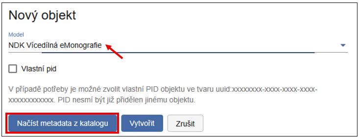
Nový objekt můžete vytvořit buďto Načtením metadat z katalogu, nebo založením prázdného objektu pomocí tlačítka Vytvořit. Ve druhém případě je potřeba metadata vyplnit ručně.
Tip
Pokud je to možné, doporučujeme využít Načtení metadat z katalogu, které celý proces urychlí a zpřesní.
V následujícím kroku vyberte katalog, ze kterého chcete záznam
stáhnout.
Zadejte kritérium vyhledávání (např. SYSNO, ISBN, signatura, čárový kód,
číslo ČNB, název apod.) a zadejte požadovanou hodnotu (např. konkrétní
ISBN). Potvrďte tlačítkem Vyhledat.
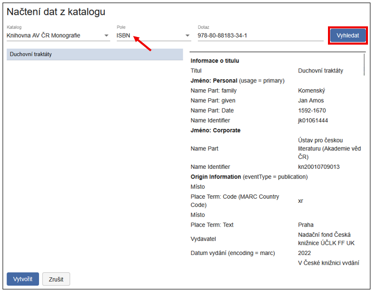
Tip
Pro co nejpřesnější výsledek doporučujeme hledat podle identifikátorů, nikoli podle názvu nebo autora.
Na ukázce níže vidíte, kolik nerelevantních výsledků může systém vrátit, pokud použijete příliš obecné vyhledávací kritérium (v tomto případě název).
Upozornění
Nejednoznačný vyhledávací dotaz může výrazně ztížit nalezení správného záznamu.
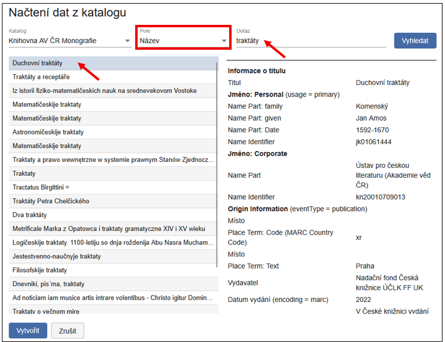
Výsledky vyhledávání se zobrazí v levé části obrazovky (seznam titulů), zatímco vpravo se zobrazí podrobnosti vybraného záznamu ve formátu MARC21. Označený záznam (který budete stahovat) je zvýrazněn šedomodře.
Pro přenos metadat do formuláře klikněte na tlačítko Vytvořit. Otevře se plovoucí náhled formuláře s předvyplněnými údaji.
Poté máte dvě možnosti: Vytvořit a přejít do objektu - metadata se uloží a zároveň přejdete k jejich editaci, nebo Vytvořit - metadata a objekt se uloží, ale zůstáváte na aktuální obrazovce.
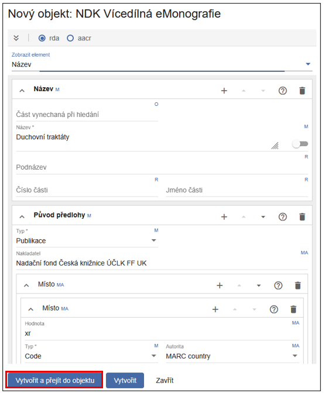
Tip
Doporučujeme zvolit Vytvořit a přejít do objektu, abyste mohli metadata ihned zkontrolovat. V případě volby Vytvořit budete muset objekt později vyhledat v hlavním rozhraní přes záložku Hledání.
Systém automaticky kontroluje správnost vyplněných dat. Pokud je ve formuláři chyba, zobrazí se červená ikona v pravém horním rohu panelu:
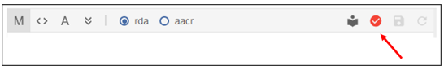
Pro snadnou identifikaci chybných polí otevřete rolovací nabídku - problematické položky budou označeny červeně (např. Origin info):
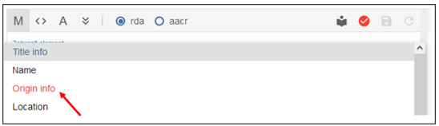
Po kontrole údajů dokument uložte pomocí ikony diskety.
Povinné elementy na titulové úrovni jsou: název titulu (souborný název), žánr s hodnotu electronic title a informace o původu předlohy (nakladatelské údaje).
NDK Svazek Vícedílné eMonografie
Nyní, poté co jste vytvořili nadřazenou úroveň, můžete začít připojovat jednotlivé svazky.
Tip
Pro efektivní práci doporučujeme zobrazit si dokument pomocí zobrazení Strom nebo Tabulka - obě varianty umožňují přehledně sledovat strukturu vícedílné monografie (hlavní titul a podřízené svazky).
Pro popis vícedílné monografie je dobré zvolit následující rozložení oken - v pravé části Tabulka či Strom (v ukázce níže obojí), v němž bude znázorněna struktura celého dokumentu (tedy titul vícedílné monografie a pod ním jednotlivé svazky), Popisná metadata a panel Média, který je potřebný pro přidání plného textu (PDF, PDF/A).
Zeleně podbarvené panely značí aktivní části editačního rozhraní:
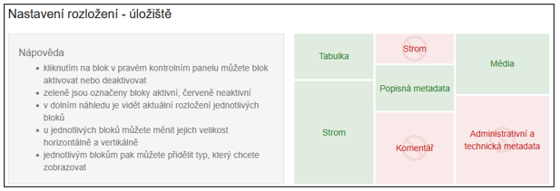
Po přidání prvního dílu klikněte na ikonu Plus (+):
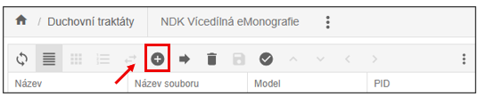
Otevře se dialogové okno známé ze zakládání jiných modelů a objektů. Výběr modelu je přednastaven na NDK Svazek eMonografie.
Tip
Doporučujeme využít možnost Načíst metadata z katalogu, kterou najdete v levém dolním rohu dialogového okna.
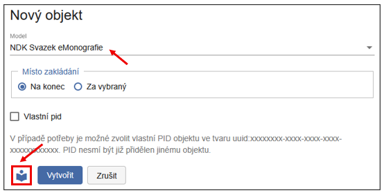
Postup:
-
Vyberte katalog, odkud chcete metadata načíst
-
Zadejte kritérium (např. ISBN, číslo ČNB, název)
-
Potvrďte tlačítkem Vyhledat
Zobrazí se výsledky - ideálně pouze jeden (jako na příkladu níže). V pravé části si ověřte, že jde o správný záznam. Po kontrole klikněte na Vytvořit.
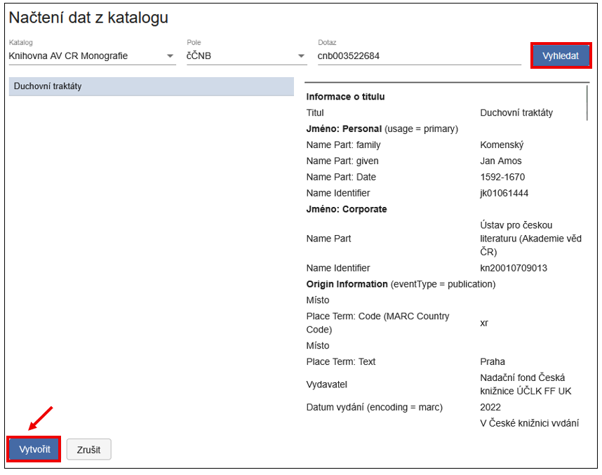
Po výběru záznamu se zobrazí plovoucí formulář. Máte dvě možnosti: Vytvořit a přejít do objektu nebo Vytvořit. Obě varianty vás ponechají v editačním prostředí, doporučujeme ale volbu Vytvořit, protože vám umožní snáze pokračovat v přidávání dalších svazků.
Další svazek (podřízený objekt) přidáte opět kliknutím na ikonu plus (+).
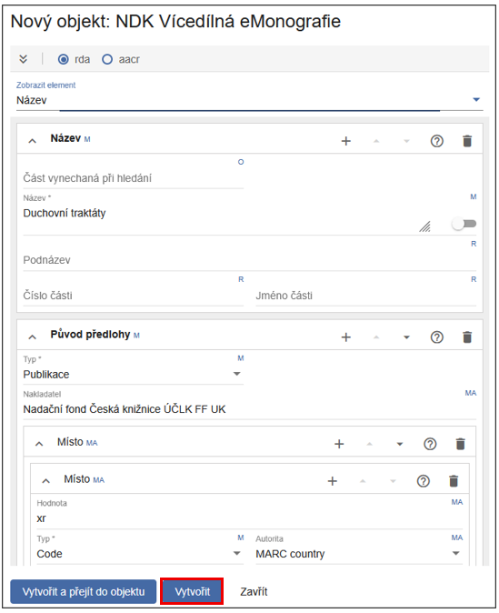
Po přidání více svazků bude obrazovka vypadat přibližně takto:
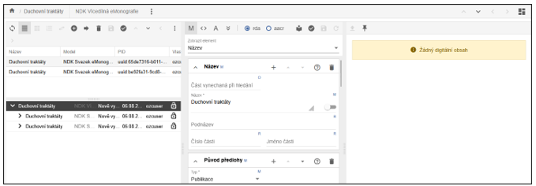
Po založení jednotlivých objektů zkontrolujte a případně upravte metadata, zejména: číslo části (Part number) a Název části (Part name).
Zadané číslo se propíše do metadat i do zobrazení ve Stromu a Tabulce:
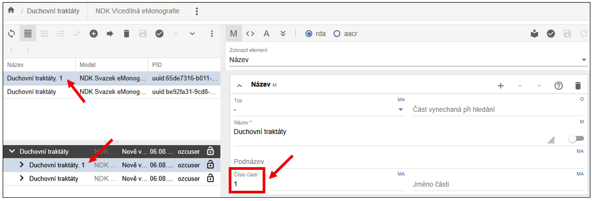
Při přidávání dalších svazků lze určit i jejich umístění (pozici) ve struktuře. Místo zakládání je dvojí - Na konec nebo Za vybraný.
-
Na konec - nový objekt se zařadí na konec seznamu,
-
Za vybraný - objekt se vloží přímo za aktuálně označený řádek (podbarvený).
Pořadí jednotlivých svazků lze změnit přetažením myší, nebo funkcí Změna pozice.
- Přetažením myší - přetáhněte objekt na požadovanou pozici. Po přesunutí obrazovka zešedne - pro její opětovné zaktivnění klikněte na ikonu diskety (Uložit).
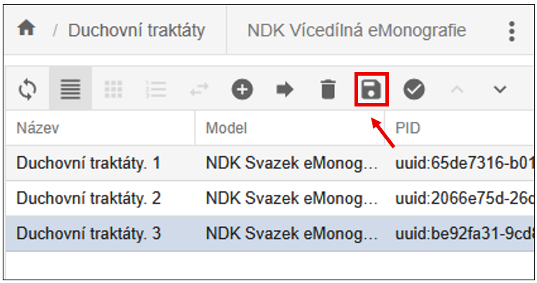
- Funkce Změna pozice - najdete ji v nabídce pod třemi tečkami.
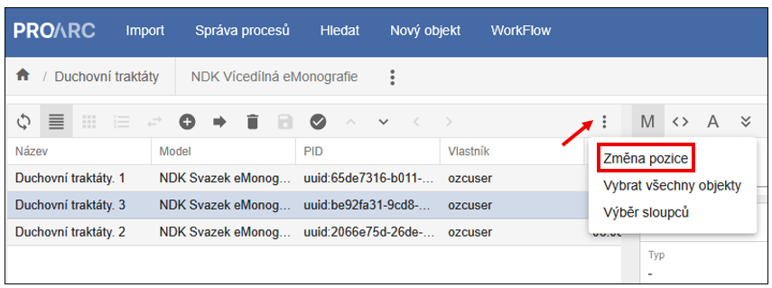
V případě, že se rozhodnote použít funkci změny pozice, po jejím zvolení se zobrazí dialog, kde do pole Pozice zadáte číslo určující pozici, kam se má objekt přesunout (v ukázce v rozmezí 1-3, protože máme založené 3 díly vícedílky) a potvrdit kliknutím na Přesunout.
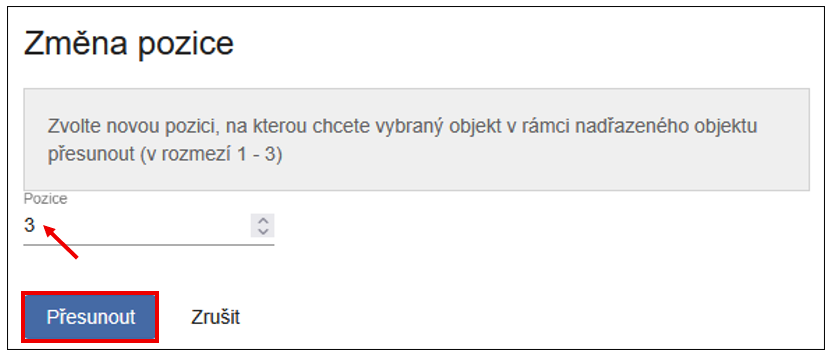
Svazek se přesune na vybrané místo a obrazovka zašedne, je potřeba ještě změnu uložit ikonou diskety. Obnovit zobrazení lze ikonou obousměrných šipek, obrazovky se poté znovu zaktivní a lze pokračovat v práci.
Přidání plného textu (PDF)
Pomocí tlačítka Rozložení v pravém horním rohu obrazovky si můžete nastavit panely, se kterými chcete pracovat. Bloky lze aktivovat nebo deaktivovat kliknutím na jejich názvy v pravém kontrolním panelu. Zeleně označené bloky jsou aktivní. Červeně označené bloky jsou neaktivní.
Upozornění
Pro přidání PDF musí být aktivní panel Média.
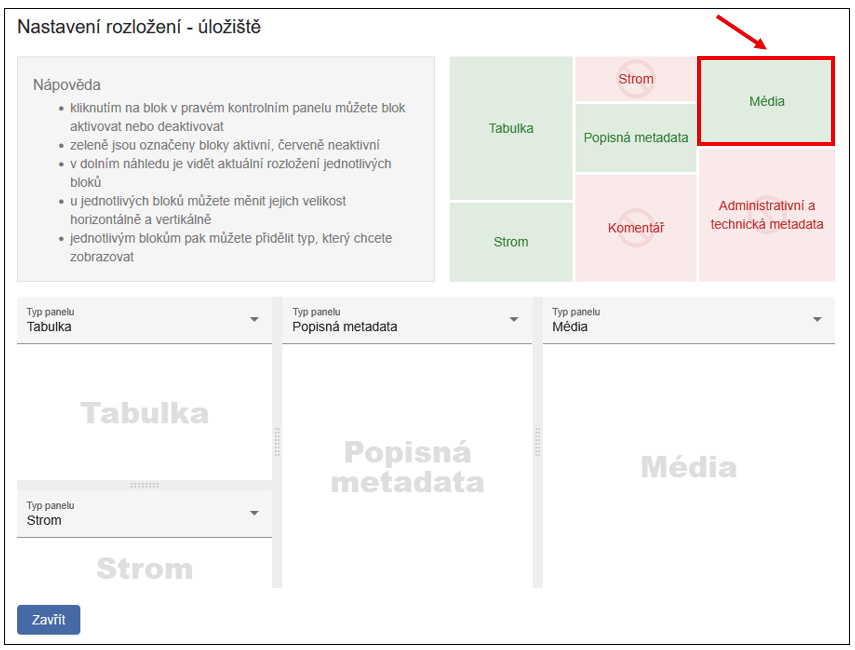
Tip
Doporučujeme aktivovat i některý z panelů s Popisnými metadaty, příp. MODS XML, abyste si ověřili, že přidáváte PDF k odpovídajícímu dokumentu.
Výchozí stav bez nahraného plného textu je znázorněn na obrázku - prázdná obrazovka se žlutě podbarveným upozorněním „Žádný digitální obsah").
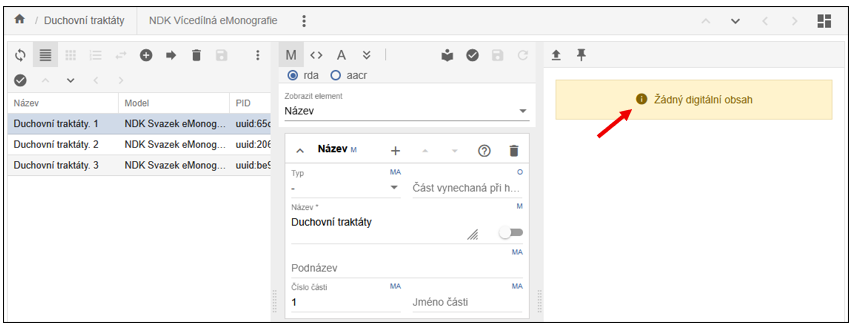
Pro přidání PDF je třeba na panelu Média kliknout na ikonu šipky, pojmenované Načíst nový digitální obsah a následně vybrat PDF soubor z disku počítače. Plný text k prvnímu dílu (vpravo je podbarvený) nahrajete takto:
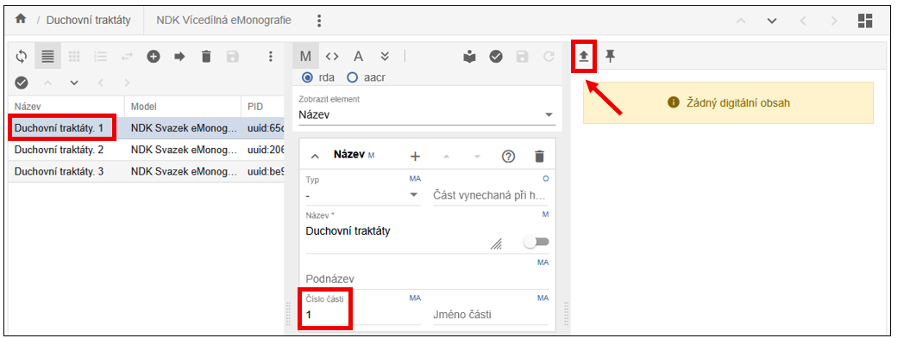
V současné verzi klienta není třeba PDF samostatně ukládat - dokument se uloží automaticky.
Pokud omylem načtete nesprávný soubor, můžete ho smazat, nahradit jiným nebo s ním dále pracovat (např. přiblížení, generování PDF/A).
Přidělení URN:NBN
Pro export dokumentu je povinné přidělení identifikátoru URN:NBN.
URN:NBN lze přidělit dvěma způsoby:
1. Přímo v editaci objektu v úložišti - funkce se nachází v nabídce pod ikonou se třemi tečkami:
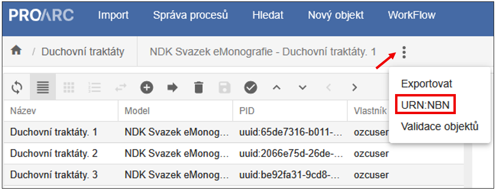
2. V základním okně úložiště - hledání, kde je funkce umístěná na lištách obou horizontálních podoken:
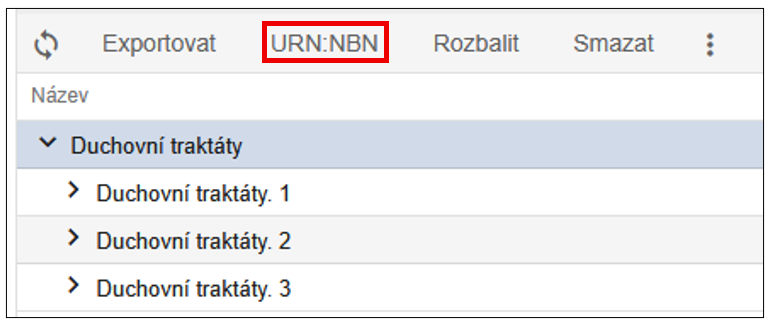
Po kliknutí na tlačítko URN:NBN pro přidělení se otevře dialogové okno. Zde v rozbalovacím seznamu zvolte příslušného registrátora, který je určen v konfiguraci systému ProArc.
Po úspěšné registraci obdržíte zpětnou vazbu přímo od Resolveru.
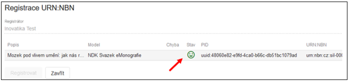
Identifikátor URN:NBN se automaticky zapíše do metadat jako jeden z platných identifikátorů dokumentu.
ProArc je navíc vybaven ochranou proti duplicitní registraci. V případě, že se pokusíte zaregistrovat dokument znovu, systém na tuto skutečnost upozorní a další registraci neprovede.
Export dokumentu
Jakmile má dokument přidělený identifikátor URN:NBN, je možné jej exportovat jako balíček ve formátu NDK PSP.
Balíček NDK PSP je určen zejména pro importy do Digitální knihovny (systém Kramerius) využívající image server. V některých případech je také předáván do Národní digitální knihovny v rámci projektů VISK nebo pro potřeby replikace.
Export je možný:
-
do lokálního adresáře,
-
nebo přímo do Krameria.
Cíl exportu zvolíte v dialogovém okně výběrem z rozbalovací nabídky:
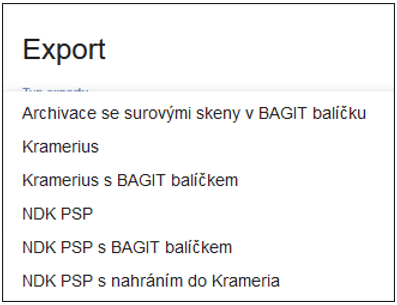
Pokud je to v konfiguraci instance ProArcu umožněno, můžete data odeslat přímo do Krameria. V případě, že máte více instancí Krameria, v tomto dialogovém okně můžete vybrat konkrétní instanci, stejně tak zvolit licenci, pod jakou bude dokument zpřístupněn. Po nastavení všech parametrů klikněte na Zahájit export. Např.:
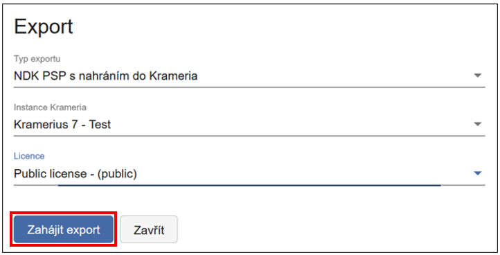